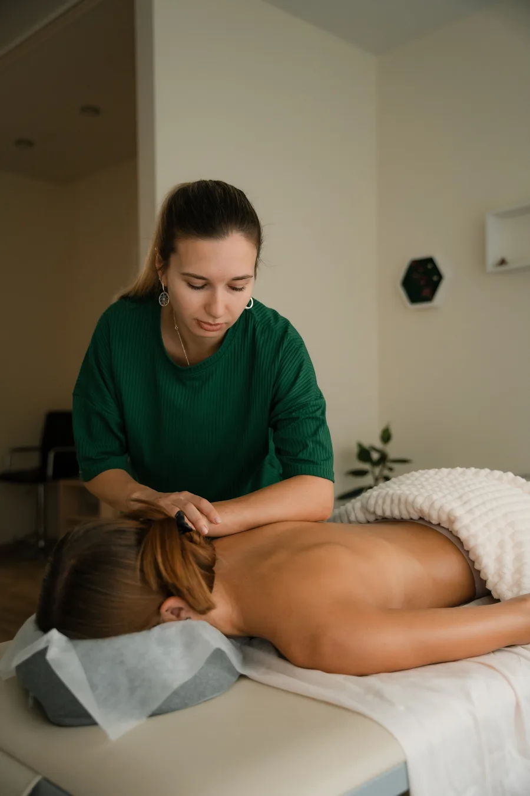
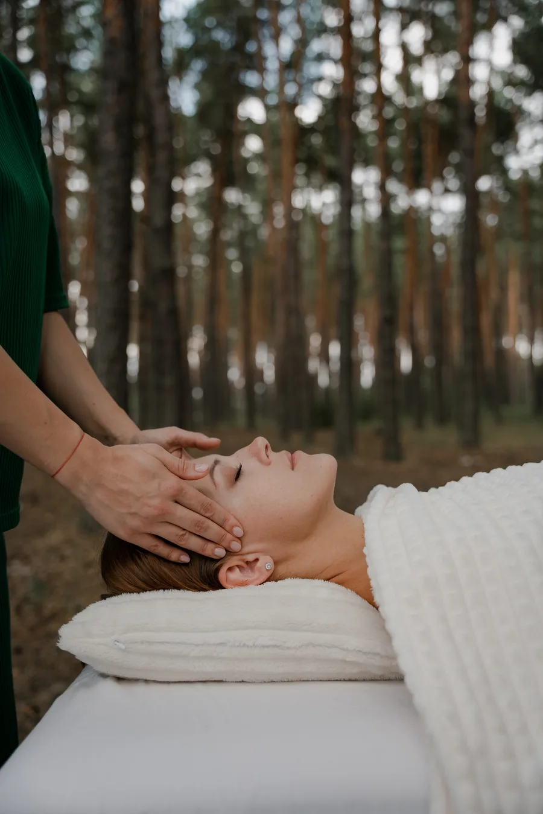

Диагностическая сессия
Первое знакомство с методом
Возможность познакомиться с ребалансингом, почувствовать особенности телесной работы и обсудить индивидуальный запрос.
ЗаписатьсяТ Е Л Е С Н А Я П Р А К Т И К А
Диалог с телом
на языке прикосновений
Глубокое расслабление, снятие напряжения
и восстановление внутреннего равновесия

Обо мне
Я — телесный специалист, практик ребалансинга.
Я верю, что наше тело — это не просто физическая оболочка. Оно хранит историю наших переживаний, отражает эмоциональное состояние и часто сигнализирует о том, на что мы не обращаем внимания.
В своей работе я создаю пространство, где можно замедлиться, прислушаться к себе и почувствовать заботу о собственном теле.
Ребалансинг — бережный метод: здесь нет боли, давления и борьбы с телом. Мы не «чиним» вас — мы вместе создаём условия, в которых тело само начинает отпускать лишнее. Каждая встреча строится вокруг вашего запроса и вашего темпа.
Кабинет в Воронеже — тёплое тихое пространство, где можно выдохнуть и побыть с собой. А летом практика выходит на природу: лес, воздух и звуки вокруг становятся частью процесса.
Когда стоит прийти

Что такое ребалансинг
Ребалансинг — метод телесной работы, объединяющий внимательные прикосновения, работу с мышцами и фасциями, осознанное дыхание и внимание к телесным ощущениям.
Это не просто массаж, а процесс, в котором тело постепенно отпускает напряжение, а вы возвращаетесь к ощущению лёгкости, свободы и внутреннего баланса.
Обсуждаем ваш запрос и текущее состояние.
Бережные прикосновения и снятие напряжения.
Вы прислушиваетесь к своему телу и его откликам.
Отдых, обратная связь и рекомендации.
Первое знакомство с методом
Возможность познакомиться с ребалансингом, почувствовать особенности телесной работы и обсудить индивидуальный запрос.
ЗаписатьсяГлубокая работа с телом
Больше времени для внимательной телесной практики, расслабления и восстановления контакта с собой.
ЗаписатьсяНе знаете, какой формат выбрать? Напишите Наталье — она поможет определиться.
Помочь выбрать сессиюКаждая встреча индивидуальна. Многие приходят за возможностью расслабиться, почувствовать своё тело и уделить время себе.
Запишитесь на сессию ребалансинга и почувствуйте, как меняется ваше состояние.
Записаться на сессию